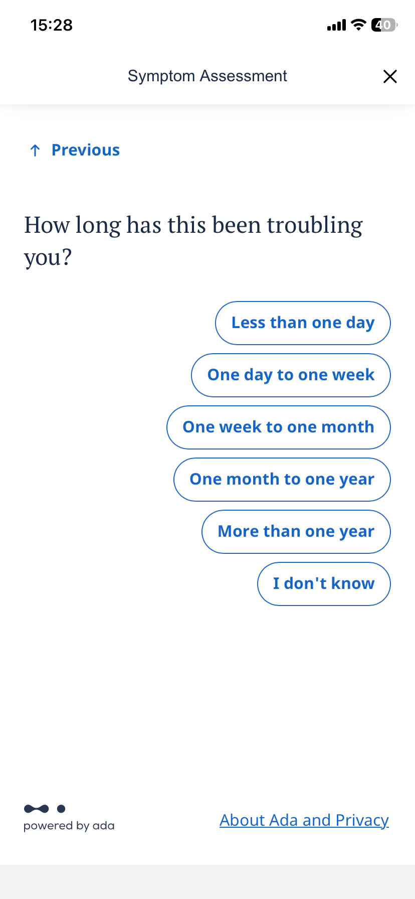
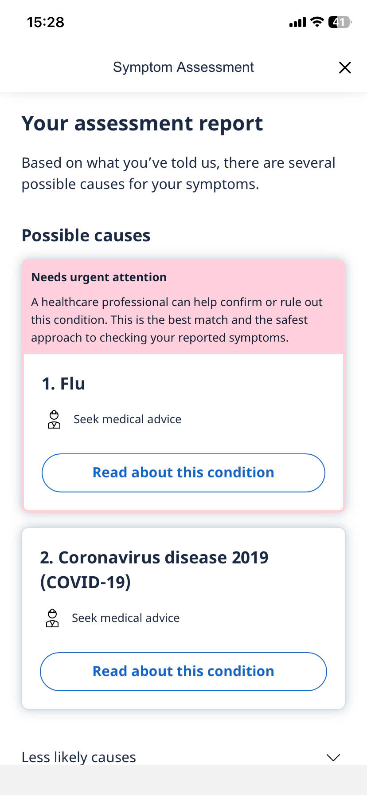
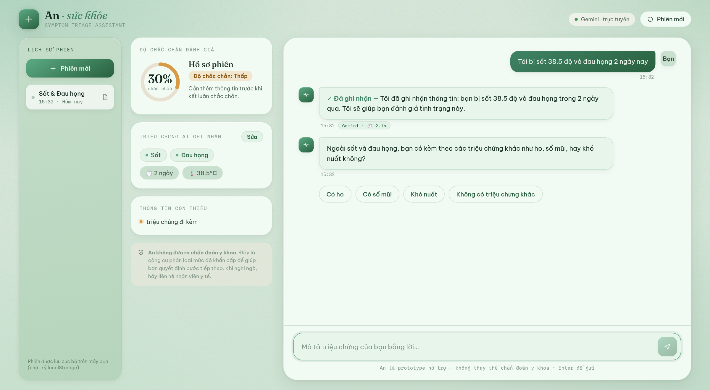
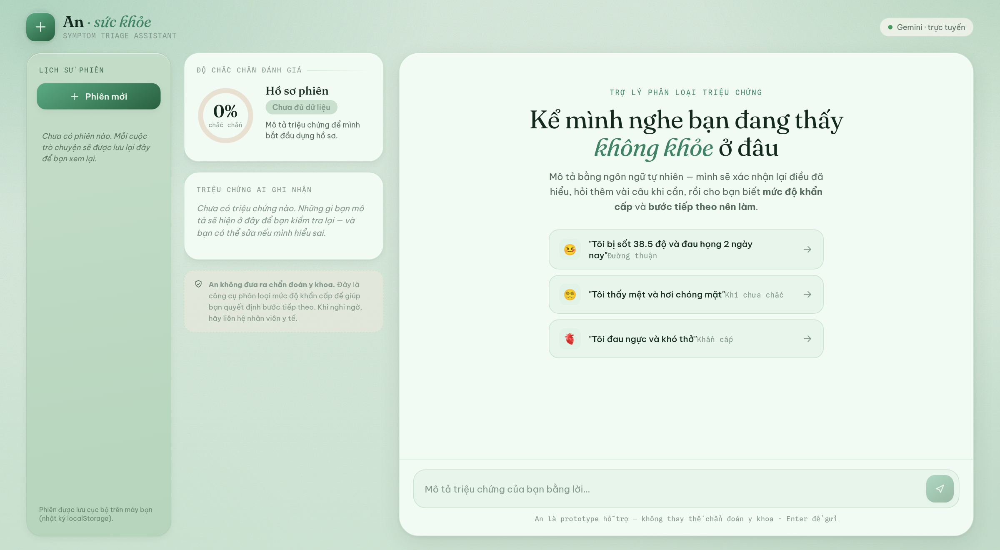

Mô tả triệu chứng bằng lời — An xác nhận lại điều đã hiểu, hỏi thêm khi cần, rồi cho biết mức độ khẩn cấp và bước tiếp theo.
Symptom checker bắt trả lời chuỗi câu hỏi cứng / chọn đáp án có sẵn → tương tác dài, mất kiên nhẫn. Kết quả trả về nhiều bệnh cùng lúc, không giải thích → bối rối, lo âu, mất tin tưởng.


Theo dõi, chưa cần đi khám.
Cần khám, chưa khẩn cấp.
Gọi 115 / đến cấp cứu.

Hiện độ chắc chắn + thông tin còn thiếu; chỉ cảnh báo nặng khi đủ red flag.
Red flag → bypass sang Cấp cứu, không cho self-care.
Đầu vào nghi spam/mâu thuẫn (“chồng sắp đẻ”) → hỏi xác nhận lại; nội dung vi phạm đạo đức/pháp luật → từ chối + hướng hỗ trợ.
Backend lỗi → tự fallback rule-based. Có log JSONL + traceback; UI có ErrorBoundary.

React + Vite + Framer Motion · UI “mint apothecary” · lịch sử phiên (localStorage) + thời gian chạy.
Python + Google Gemini · agent loop + system prompt triage · transcripts & log.